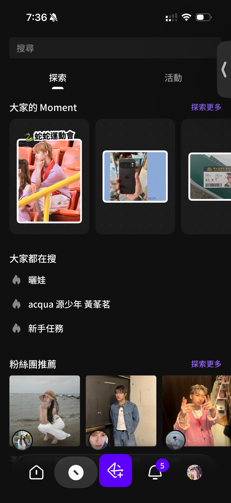
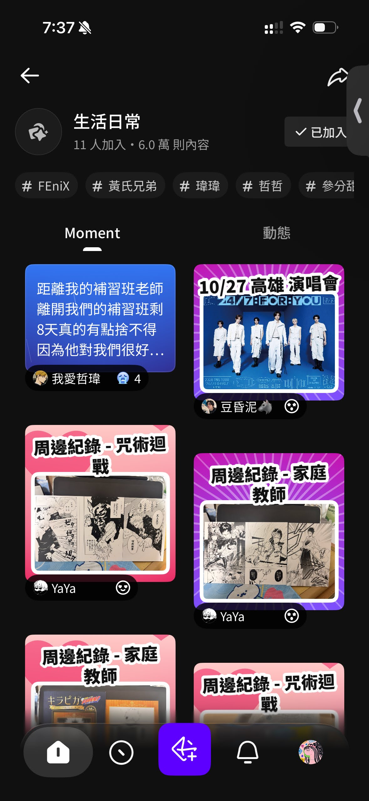

hidol 是遊戲橘子從 beanfun! 轉型後的全新粉絲社群平台，從零啟動。轉型初期，討論容易陷入「舊功能要不要帶過來」的細節爭論，而非聚焦在新產品真正要解決的問題。
我的第一步是把討論拉回核心——用需求金字塔把不同類型 IP 的用戶需求攤開，結合集團現有資源，找出哪種 IP 是短期內最有條件切入的。策略有了依據，取捨才有辦法真正落地。
隨著框架越來越清晰，一個核心洞察浮現出來：粉絲不只是想要「另一個追星 app」，他們真正想要的是一個懂我熱愛的地方——和同溫層的連結感、被 IP 看見的距離感、以及能把個人喜好化為身分認同的空間。這個洞察成為 hidol 整體設計的起點。


工作坊討論 → 需求金字塔 → 策略方向對齊
「平台本身是底色，最精彩的永遠是 IP 與粉絲之間的故事。」
這個設計觀定義了 hidol 整個視覺系統的方向：平台本身不能搶戲，要成為最好的承載容器，把 IP 與粉絲之間的情感連結放在最顯眼的位置。
具體落地在視覺決策上，就是選擇了深色系作為整體基調。深色介面本身低調沉穩，不干擾 IP 的主題色與圖像，讓每一個粉絲團都能在同一套框架下發展出截然不同的視覺風格。為了在深色背景上保持層次感又不顯笨重，我們的色板捨棄純白，改用多階透明度來構築視覺層次：
介面中的文字、底板、分隔線，全部來自同一個白色基礎色，以 95% / 90% / 80% / 70% 四個透明度區間進行區分。這讓整個介面的灰階過渡保持和諧，不同 IP 主題疊上來時，底層的灰度關係也不會失控。
這個決策的另一層考量是工程效率——單一基礎色搭配透明度，比維護多組靜態灰色值更容易保持一致性，也更容易讓不同工程師的實作結果對齊設計稿。

Alpha 色表：以透明度取代靜態灰階，統一介面層次
hidol 的介面裡存在三種視覺主體：IP 本身的品牌色、平台的官方行為、以及粉絲的互動行為。為了讓用戶在無須閱讀文字的情況下就能辨認脈絡，我們為每種主體制定了專屬的色彩語意。

粉絲團首頁：三層色彩語意在同一個頁面共存
其中最細膩的是「翻牌留言」的色彩邏輯。IP 貼文下的留言，只有 IP 主動回覆才會出現粉色高亮；沒被回應的留言維持灰色靜默。粉色在頁面中具有稀缺感——出現了，就代表被看見了。

翻牌留言：IP 回覆後粉色高亮，未翻牌維持灰色靜默
MVP 範疇收斂過程中，最關鍵的一個取捨來自舊產品線。轉型初期，團隊對舊產品的部分功能抱持「也許可以沿用」的心態，其中討論最多的是原有的展示品功能系統（SHOW）。隨著新平台的 IA 架構逐步清晰，我們一起盤點了每個模組與 hidol 核心定位的關係——最終，SHOW 功能正式從路線圖中移除：

MVP 功能架構：框線標示的區塊為第一版刻意延後或捨棄的範疇
方向確立後，設計團隊展開分工。我主導的範疇涵蓋多條並行線：創作者平台基礎建設（內容排程、粉絲團管理、數據分析、人員權限管理）、即時互動體驗、以及整體視覺系統的建立與落地。
多模組同時推進意味著每個決策都不是獨立的——IA 結構的一個選擇，會同時影響創作者端與用戶端的體驗邏輯。設計過程中持續與工程、PM 協作對齊，確保每個模組在技術可行性與用戶體驗之間取得平衡。


2024 年 7 月 16 日，hidol 在 App Store 與 Google Play 同步上線。首版包含粉絲社群、IP 互動、創作者平台等核心模組；同年 12 月，AI 粉絲應用語音信功能上線，獲得社群正面回饋。
上線後收集的用戶問卷文字雲中，「懂我」、「有溫度」、「粉絲感」這些詞語高頻出現——與最初設計時的核心洞察直接呼應，驗證了「讓 IP 發光、平台退居底色」的設計方向。





← 左右滑動查看全部頁面
- 2024/07/16 正式上線，App Store 4.8★ / Google Play 4.1★
- 完成粉絲社群、AI 粉絲應用語音信、創作者平台等多模組建構
- 語音信於 2024/12/24 首發，獲社群正面回饋
- 用戶問卷文字雲驗證「懂我」感知——與核心設計洞察直接對應
- 後續 Moment、成就機制等核心功能均在此架構上延伸展開